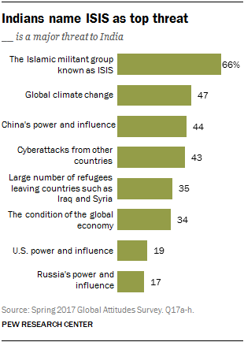
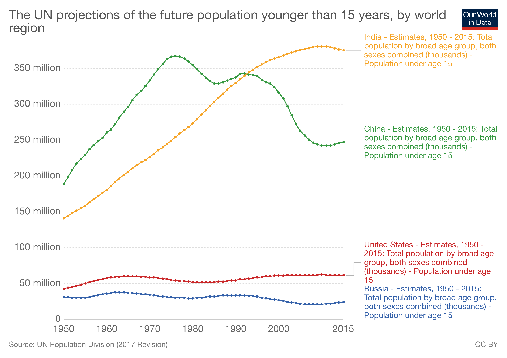

One of the biggest problems facing climate change action is the fact that many people refuse to believe in it in the first place. Though we’ve established that the scientific literature is clear on the subject, socio-political bias seems to overpower science in many cases. Many citizens from nations all around the globe often fall into right wing traps and refute the clearly established evidence to heed their political orientations. On the other hand, though some people do recognise that the globe is warming up, the intensity and graveness of the situation is often trivialised.
Let’s zoom into the Indian case: a 2017 Pew Research survey found that only 47% of nearly 2500 Indian respondents believe climate change to be a grave threat to India. Even worse, a Yale study observed that up to 65% of the Indian population could have no idea what climate change even is.
This is a huge problem because we need a larger consensus as the urgency of the problem aggravates with each month. A UN panel of scientists have predicted that we only have 12 years to drastically cut our fossil fuel emissions and adopt climate change policies, which if we fail to do so could warrant a cataclysmic and irreversible future where millions go homeless and hungry. It is clear that we need cooperative action, which can only be possible if we find solutions to drill climate concerns into the collective mindset. One such solution? The figures whom we often tend to overlook: children.
A two-year experimental study published in the Nature Climate Journal found that children who were enrolled in curriculums that involved in the learning of climate concerns were able to influence their parents’ beliefs to a significant degree. It was observed that parental concern on climate change had increased by 23% on average. The highlight: politically conservative parents—who initially showed lower concerns and generally tend to dismiss climate problems—had a significantly higher change in concern compared to other politically oriented groups, standing at 28%.
The highlight: politically conservative parents—who initially showed lower concerns and generally tend to dismiss climate problems—had a significantly higher change in concern compared to other politically oriented groups
Children in the study had teachers who taught them lessons on climate change and involved them in field trips to places that are being marred due to global warming.
The study hypothesised that since climate change perception in children seem less susceptible to the influence of political bias, it maybe possible for them to inspire adults towards higher levels of climate action. It suggested that intergenerational learning could be pivotal to overcoming barriers that millions tend to have when it comes to climate change.
This research could have groundbreaking revelations for India because we are now faced with a major task: to educate the largely uniformed majority—the 65% of the Indian population—about climate change.
Consider the illiterate adult populace who predominantly reside in rural areas. It would be extremely difficult to get this section to go through formal educational and awareness programs to increase their recognition of climate change. But what could work is educating their children on this issue—who are now choosing to through schooling in increasing numbers. Through intergenerational learning, children can transfer knowledge on climate change to their uninformed parents, and as a result break the barriers of illiteracy and urban connectivity that often hinder awareness on the matter.
India currently has the largest population under 15 years of age, and is projected to hold this record until 2100.
The fact that India holds the largest youngest population can and must be viewed as an asset with great potential. It is vital India heeds the potential of each and every child in raising awareness for pressing modern issues through intergenerational learning. This doesn’t just have to apply to climate change, but other major issues that need salience such as hygiene and civic responsibilities.
But for such learning to happen, the question must move from how Indian education can help children only, to how education can help children heighten society’s collective knowledge. Taking a multifaceted approach to education would ensure that it is not only the civic sense of children that is improved, but also that of the society’s.
The focus placed on climate change by the current Indian curriculum is by all means—if we were to put it bluntly—a joke. Most Indian science textbooks barely have a paragraph on global warming, let alone field trips to affected areas.
The focus placed on climate change by the current Indian curriculum is by all means—if we were to put it bluntly—a joke.
Contemporary Indian curriculums need drastic changes to their current structure because what students currently receive is just primitive and outdated knowledge that is hardly calibrated to the modern world. Along with adjustments to the curriculum, teachers must be encouraged to complement subject material with live events that are happening around the country and the world (for example, the water shortages faced by different cities — a most recent case would be that of Chennai’s).
We can not bring climate change into mainstream discourses without achieving a state of collective awareness on the matter. It is paramount that we look towards measures and start drafting policy such that the agents of change — our country’s children — can catalyse the awareness process for the country.